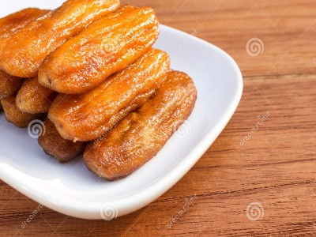

|  |
Food's name: Dried banana with honey▸ Ingredients:
▸ Time to prepare: 1 hour 30 minutes ▸ Approx quantity: 10 dried bananas |
▸ Detailed recipe:
- Peel the banana and cut it into 4 slices. Soak in a bowl of water (squeeze the juice of 1/2 lemon, a few ice cubes), soak for 15 minutes and drain the water
(take out the banana gently).
- Preheat the fryer to 150°C for 5 minutes. Line the pan with parchment paper and place the bananas in it. Put in the first heat set Fryer without oil: 150°C
for 8 minutes to close, take out, flip each piece of banana and then continue to set the temperature to 150°C for 8 minutes.
- Continue to set the second temperature: 100°C 15 minutes, set again to 100°C 15 minutes.
- Take out the banana, brush a thin layer of honey on each piece of banana and continue drying at 100°C for 10 minutes. Flip the bananas over and then
brush with honey on each piece of banana and then dry at 100°C for 10 minutes (because each oven is different, everyone adjusts the temperature).
Take out the banana and let it cool.
=> So you've got yourself another delicious dish, now let's enjoy it !
▸ Calories and related information: